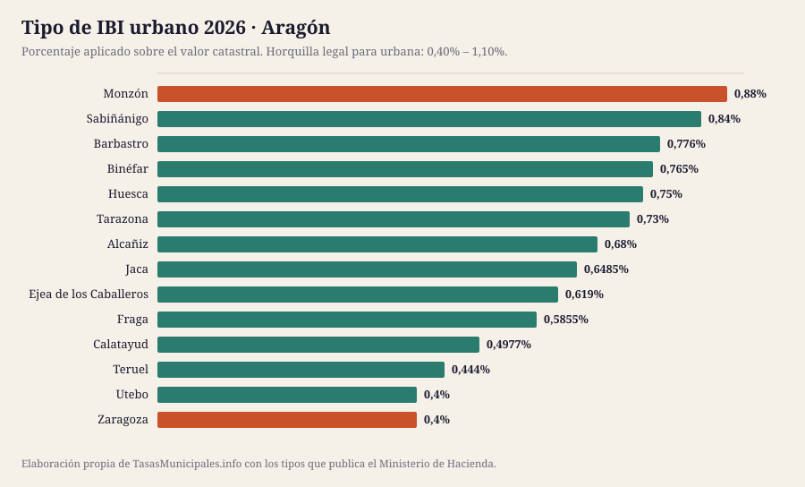
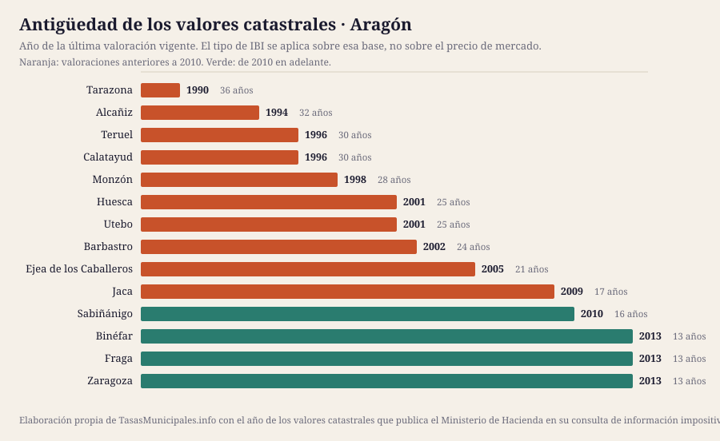

IBI, tasa de basuras y plusvalía en Aragón 2026
Esta guía reúne el IBI, la plusvalía municipal, el impuesto de circulación y las bonificaciones de los 14 municipios de Aragón que cubrimos, con el detalle de cada uno y una tabla para compararlos de un vistazo. Población cubierta: 954.843 habitantes.
Lo que cuesta el IBI en Aragón en 2026
El tipo de IBI urbano en Aragón se mueve entre el 0,4% de Zaragoza y el 0,88% de Monzón, con una media de 0,64% en los 14 municipios analizados. Esa horquilla parece pequeña, pero sobre un valor catastral de 50.000 € supone una diferencia de 240 € al año según dónde esté el inmueble: 200 € en Zaragoza frente a 440 € en Monzón.
El tipo no lo explica todo: sobre él se aplica el valor catastral, y en Aragón las valoraciones vigentes van de 1990 en Tarazona a 2013 en Binéfar. En 10 de los 14 municipios con dato la última valoración es anterior a 2010, así que la base del recibo arrastra el mercado inmobiliario de entonces. El año de los valores de cada municipio está en la tabla, tal y como lo publica el Ministerio de Hacienda.
Aquí no publicamos el importe de la tasa de residuos ni las fechas de cobro de cada municipio: no existe fuente estatal que los recoja y preferimos el hueco a un dato sin respaldo. Lo que sí fija la ley es el plazo por defecto del IBI, del 1 de septiembre al 20 de noviembre cuando la ordenanza no señala otro (art. 62.3 de la Ley General Tributaria). La mecánica general del impuesto está en las guías de IBI 2026, bonificaciones y plusvalía; aquí van los datos de Aragón.
Ficha fiscal de cada municipio
Tabla comparativa: el IBI en los 14 municipios de Aragón
Ordenable por cualquier columna. Todas las cifras salen de la consulta de información impositiva del Ministerio de Hacienda. «Cuota IBI» aplica el tipo de cada municipio a un valor catastral común de 50.000 €; con el de tu recibo, usa la calculadora. «Valores catastrales» es el año de la última valoración vigente, que determina la base sobre la que se aplica el tipo.
| Municipio | Habitantes | IBI urbano | IBI rústico | Cuota IBI (VC 50.000 €) | Valores catastrales | Tipo BICE |
|---|---|---|---|---|---|---|
| Zaragoza | 693.091 | 0,4% | 0,7% | 200 € | 2013 | 1,3% |
| Huesca | 55.454 | 0,75% | 0,592% | 375 € | 2001 | 0,86% |
| Teruel | 36.655 | 0,444% | 0,63% | 222 € | 1996 | 0,63% |
| Calatayud | 20.158 | 0,4977% | 0,6557% | 249 € | 1996 | 0,7154% |
| Utebo | 19.116 | 0,4% | 0,402% | 200 € | 2001 | 1,3% |
| Monzón | 18.525 | 0,88% | 0,78% | 440 € | 1998 | 0,88% |
| Barbastro | 17.807 | 0,776% | 0,862% | 388 € | 2002 | 1,3% |
| Ejea de los Caballeros | 17.129 | 0,619% | 0,596% | 310 € | 2005 | 1,3% |
| Alcañiz | 16.505 | 0,68% | 0,68% | 340 € | 1994 | 1,3% |
| Fraga | 15.576 | 0,5855% | 0,5855% | 293 € | 2013 | 1,3% |
| Jaca | 14.024 | 0,6485% | 0,35% | 324 € | 2009 | 1,3% |
| Tarazona | 10.873 | 0,73% | 0,79% | 365 € | 1990 | 1,3% |
| Binéfar | 10.235 | 0,765% | 0,534% | 382 € | 2013 | 0,994% |
| Sabiñánigo | 9.695 | 0,84% | 0,78% | 420 € | 2010 | 1,3% |


Quién gestiona y cobra el IBI en Aragón
El recibo, el calendario y las solicitudes se tramitan donde esté la recaudación, que no siempre es el ayuntamiento:
| Provincia | Municipios en la guía | Organismo de recaudación | Estado del enlace |
|---|---|---|---|
| Huesca | 7 | Diputación Provincial de Huesca | responde correctamente |
| Zaragoza | 5 | Diputación Provincial de Zaragoza | pendiente de comprobar |
| Teruel | 2 | Diputación Provincial de Teruel | pendiente de comprobar |
De ahí que no haya una fecha única para toda Aragón: cada organismo publica su calendario.
¿Dónde se paga más y menos IBI en Aragón?
La mediana del tipo urbano de los 14 municipios de Aragón es del 0,66%, y queda 0,058 puntos por encima de la mediana nacional de la guía (0,61%): 29 € más al año por un inmueble de 50.000 €. 2 de ellos aplican exactamente el mínimo legal del 0,40% (Zaragoza, Utebo).
En el extremo alto está Monzón con el 0,88%; en el bajo empatan 2 municipios al 0,4%. Ojo: un tipo alto no significa un recibo alto, porque la cuota es valor catastral × tipo. Ranking nacional →
Quién ha movido el tipo entre 2024 y 2025
En Aragón, un municipio ha subido el tipo y un municipio lo ha bajado; el resto lo mantiene.
| Municipio | 2024 | 2025 | Variación |
|---|---|---|---|
| Calatayud | 0,487% | 0,4977% | Sube 0,011 puntos |
| Tarazona | 0,74% | 0,73% | Baja 0,010 puntos |
ICIO, impuesto de circulación y plusvalía en Aragón
El IBI no es el único tributo que aprueba un ayuntamiento. En Aragón, el ICIO va del 2,9% al 4% (mediana 3,59%); un turismo de 8 a 11,99 CV paga entre 42,60 € y 68,16 € al año; 8 de 13 aplican los coeficientes máximos de plusvalía del art. 107.4 TRLRHL.
| Municipio | ICIO (obras) | IVTM 8–11,99 CV | Plusvalía: tipo máximo | ¿Coeficientes al tope legal? |
|---|---|---|---|---|
| Alcañiz | 4% | 57,20 € | 30% | Sí |
| Barbastro | 2,93% | 67,17 € | 30% | Sí |
| Binéfar | 3,36% | 63,82 € | 18% | No |
| Calatayud | 3,53% | 64,92 € | 28,1% | Sí |
| Ejea de los Caballeros | 3,1% | 68,16 € | 28,93% | No |
| Fraga | 2,9% | 58,28 € | — | — |
| Huesca | 3,9% | 63,90 € | 28% | Sí |
| Jaca | 3,15% | 42,60 € | 22% | Sí |
| Monzón | 3,95% | 67,82 € | 30% | No |
| Sabiñánigo | 3,59% | 55,00 € | 30% | No |
| Tarazona | 3,59% | 63,99 € | 30% | Sí |
| Teruel | 4% | 60,29 € | 30% | No |
| Utebo | 4% | 58,08 € | 25% | Sí |
| Zaragoza | 3,87% | 56,10 € | 28% | Sí |
Fuente: Ministerio de Hacienda. El guion marca lo que la consulta no publica. La tarifa completa del IVTM está en cada ficha.
Guía del impuesto de circulación → · Comparativa del IVTM → · Quién aplica el coeficiente máximo de plusvalía →
Cuándo se revisaron los valores catastrales en Aragón
La cuota del IBI es valor catastral × tipo, así que la fecha de la última valoración colectiva pesa tanto como el porcentaje que vota el pleno. En Aragón la mediana está en 2001, más antigua que la del conjunto de la guía (2005), y 9 de 14 municipios arrastran valores de hace 20 años o más.
| Municipio | Año de la valoración | Antigüedad | Tipo urbano |
|---|---|---|---|
| Tarazona | 1990 | 36 años | 0,73% |
| Alcañiz | 1994 | 32 años | 0,68% |
| Teruel | 1996 | 30 años | 0,444% |
| Calatayud | 1996 | 30 años | 0,4977% |
| Monzón | 1998 | 28 años | 0,88% |
| Huesca | 2001 | 25 años | 0,75% |
| Utebo | 2001 | 25 años | 0,4% |
| Barbastro | 2002 | 24 años | 0,776% |
| Ejea de los Caballeros | 2005 | 21 años | 0,619% |
| Jaca | 2009 | 17 años | 0,6485% |
| Sabiñánigo | 2010 | 16 años | 0,84% |
| Zaragoza | 2013 | 13 años | 0,4% |
| Fraga | 2013 | 13 años | 0,5855% |
| Binéfar | 2013 | 13 años | 0,765% |
Qué es el valor catastral, cómo se consulta y cómo se corrige → · Qué implica una ponencia desfasada →
Población de los municipios de Aragón (2020–2025)
El padrón no cambia el IBI, pero sí explica la tasa de residuos: cuando el coste del servicio se reparte entre menos vecinos, la tarifa sube. En conjunto, los 14 municipios de Aragón que cubrimos han ganado 18.256 habitantes desde 2020 (14 crecen, 0 pierden población).
| Municipio | 2020 | 2025 | Variación | % |
|---|---|---|---|---|
| Zaragoza | 681.877 | 693.091 | +11.214 | +1,6 % |
| Huesca | 53.956 | 55.454 | +1.498 | +2,8 % |
| Teruel | 36.240 | 36.655 | +415 | +1,1 % |
| Calatayud | 20.092 | 20.158 | +66 | +0,3 % |
| Utebo | 18.822 | 19.116 | +294 | +1,6 % |
| Monzón | 17.469 | 18.525 | +1.056 | +6,0 % |
| Barbastro | 17.174 | 17.807 | +633 | +3,7 % |
| Ejea de los Caballeros | 16.984 | 17.129 | +145 | +0,9 % |
| Alcañiz | 16.006 | 16.505 | +499 | +3,1 % |
| Fraga | 15.353 | 15.576 | +223 | +1,5 % |
| Jaca | 13.129 | 14.024 | +895 | +6,8 % |
| Tarazona | 10.558 | 10.873 | +315 | +3,0 % |
| Binéfar | 9.742 | 10.235 | +493 | +5,1 % |
| Sabiñánigo | 9.185 | 9.695 | +510 | +5,6 % |
Fuente: INE, padrón a 1 de enero.

Ficha fiscal de los 14 municipios de Aragón
Cada ficha recoge el detalle de ese ayuntamiento: tipos aprobados, calendario de cobro, bonificaciones, plusvalía y enlaces oficiales donde comprobarlo.
- Zaragoza — IBI 0,4% · cuota 200 € con VC de 50.000 € · valores de 2013
- Huesca — IBI 0,75% · cuota 375 € con VC de 50.000 € · valores de 2001
- Teruel — IBI 0,444% · cuota 222 € con VC de 50.000 € · valores de 1996
- Calatayud — IBI 0,4977% · cuota 249 € con VC de 50.000 € · valores de 1996
- Utebo — IBI 0,4% · cuota 200 € con VC de 50.000 € · valores de 2001
- Monzón — IBI 0,88% · cuota 440 € con VC de 50.000 € · valores de 1998
- Barbastro — IBI 0,776% · cuota 388 € con VC de 50.000 € · valores de 2002
- Ejea de los Caballeros — IBI 0,619% · cuota 310 € con VC de 50.000 € · valores de 2005
- Alcañiz — IBI 0,68% · cuota 340 € con VC de 50.000 € · valores de 1994
- Fraga — IBI 0,5855% · cuota 293 € con VC de 50.000 € · valores de 2013
- Jaca — IBI 0,6485% · cuota 324 € con VC de 50.000 € · valores de 2009
- Tarazona — IBI 0,73% · cuota 365 € con VC de 50.000 € · valores de 1990
- Binéfar — IBI 0,765% · cuota 382 € con VC de 50.000 € · valores de 2013
- Sabiñánigo — IBI 0,84% · cuota 420 € con VC de 50.000 € · valores de 2010
Preguntas frecuentes sobre el IBI y las tasas en Aragón
¿Qué municipio de Aragón tiene el IBI más alto en 2026?
De los 14 municipios analizados, el tipo urbano más alto es el de Monzón (0,88%) y el más bajo el de Zaragoza (0,4%). Sobre un valor catastral de 50.000 € son 440 € frente a 200 € al año.
¿Cuál es el tipo medio de IBI en Aragón?
La media de los 14 municipios de Aragón que recoge esta guía es del 0,64%, con una mediana del 0,66%. La ley permite moverse entre el 0,40% y el 1,10% en urbana.
¿Cuándo se paga el IBI en Aragón?
No hay una fecha única: la fija cada ordenanza y se aprueba cada ejercicio, por eso no publicamos fechas concretas. Cuando la ordenanza no señala otro plazo se aplica el del artículo 62.3 de la Ley General Tributaria, del 1 de septiembre al 20 de noviembre, y quien lo modifique no puede dejarlo en menos de dos meses. El calendario del año lo publica el organismo que recauda, enlazado en la ficha de cada municipio.
¿Cuánto se paga de basuras en Aragón?
No lo publicamos porque no podemos verificarlo: la tarifa está en la ordenanza fiscal de cada ayuntamiento y ninguna administración estatal las reúne. La Ley 7/2022 obliga desde el 10 de abril de 2025 a cobrar una tasa de residuos específica, diferenciada y no deficitaria (art. 11.3), y solo exige comunicarla a la comunidad autónoma (art. 11.5). En la guía de la tasa de residuos explicamos dónde localizar la tuya.
¿Quién cobra el IBI en Aragón?
En Aragón la recaudación de buena parte de los ayuntamientos corre a cargo de: Diputación Provincial de Zaragoza, Diputación Provincial de Huesca y Diputación Provincial de Teruel. El resto la lleva su propio ayuntamiento. Cada ficha indica cuál corresponde y enlaza dónde consultar el calendario.
¿Dónde cuesta más el impuesto de circulación en Aragón?
Por un turismo de 8 a 11,99 caballos fiscales, el más caro de Aragón es Ejea de los Caballeros con 68,16 € al año y el más barato Jaca con 42,60 €. La cuota mínima que fija la ley es de 34,08 €.
Qué está verificado en esta página
| Dato | Estado en Aragón |
|---|---|
| Tipos de IBI, rústica, BICE y año de los valores catastrales | 14 de 14 contrastados con el Ministerio de Hacienda |
| Webs oficiales de los ayuntamientos | 0 de 1 respondían el 2026-07-25 |
| Tasa de residuos y fechas de cobro | No se publican: las fija cada ordenanza, no hay registro estatal y no hemos podido acceder a una fuente primaria |
Si un dato no coincide con lo que dice tu ayuntamiento, manda la ordenanza publicada en el boletín oficial. Qué fuente respalda cada dato y cómo corregimos → · Avisar de un error
Normativa citada en esta página
- Real Decreto Legislativo 2/2004 (texto refundido de la Ley Reguladora de las Haciendas Locales)
- Real Decreto Legislativo 1/2004 (texto refundido de la Ley del Catastro Inmobiliario)
- Ley 7/2022, de 8 de abril, de residuos y suelos contaminados para una economía circular
- Real Decreto-ley 26/2021, de 8 de noviembre (adaptación del IIVTNU a la jurisprudencia constitucional)
- Sentencia del Tribunal Constitucional 182/2021, de 26 de octubre
- Ley 58/2003, de 17 de diciembre, General Tributaria
- Sede Electrónica del Catastro